O comando init é responsável por inicializar um repositório git no dispositivo
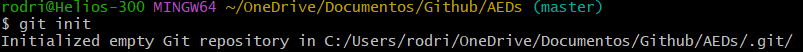O comando add adiciona arquivos para serem enviados pelo commit
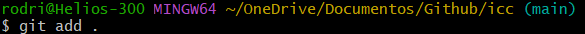O comando rm remove arquivos do repositório e adiciona a remoção no commit
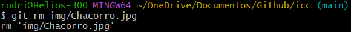
O comando commit salva uma atualização do seu repositório, que deve ser enviada ao Git pelo push
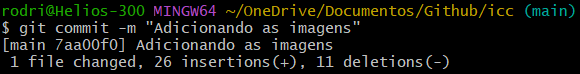O comando push atualiza a versão do seu repositório Git (é necessário ter uma atualização criada pelo commit)
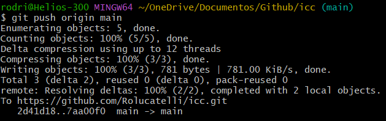O comando remote gerencia os repositórios para executar diversas ações
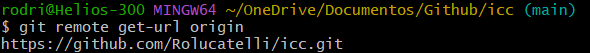O comando clone clona o repositório salvo na nuvem para um repositório local
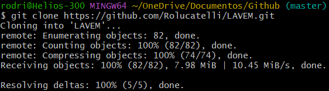O comando status mostra os arquivos modificados que estão ou não no commit
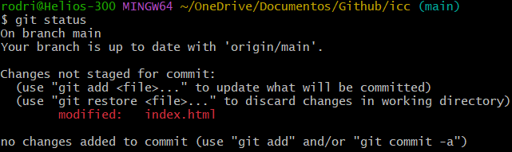O comando config configura e obtém as configurações locais ou globais
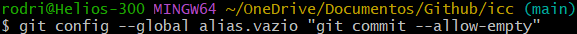O comando branch gerencia as branches, seja deletando, criando ou listando
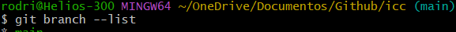O comando fetch baixa objetos e/ou tags de outro repositório
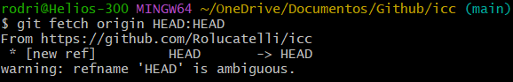O comando checkout troca a branch atual
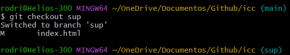O comando show mostra objetos diversos

O comando help mostra um guia de como usar os comandos git e para o que eles servem
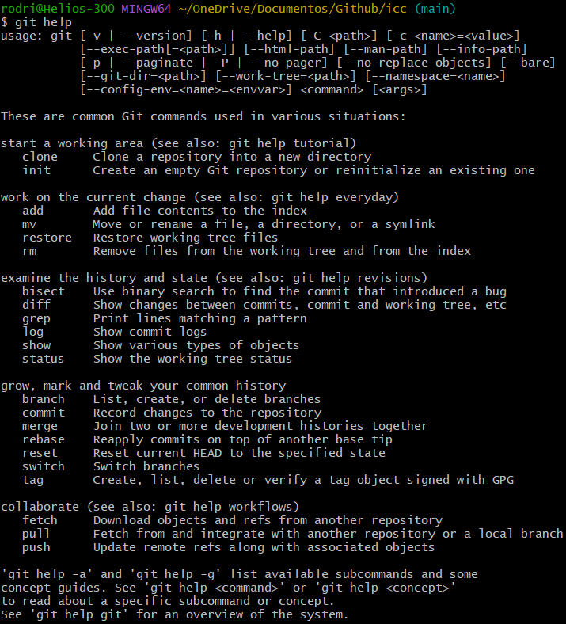O comando diff mosta a diferença entre commits
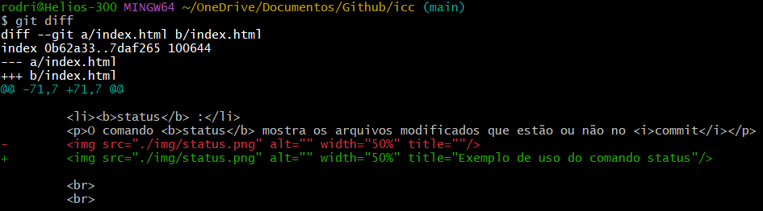O comando rebase reaplica commits em cima de outra base
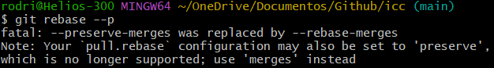O comando blame mostra o que e quem modificou no último commit
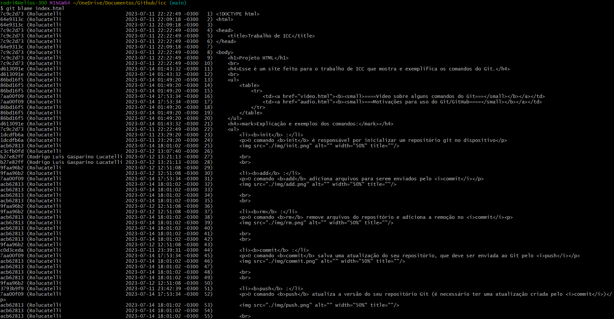O comando pull atualiza o diretótio local com o repositório na nuvem, apenas se o repositório estiver em uma versão mais atualizada
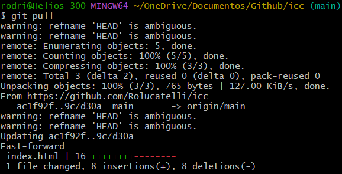O comando revert cria um commit que reverte as mudanças de um outro commit
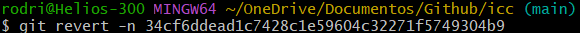O comando merge funde as mudanças de uma branch com outra
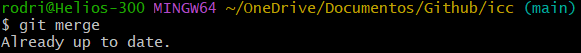O comando stash guarda as alterações em um diretório de trabalho sujo.
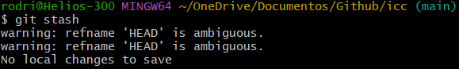O comando tag é capaz de criar, listar, deletar ou verificar tegas de objetos assinados com GPG